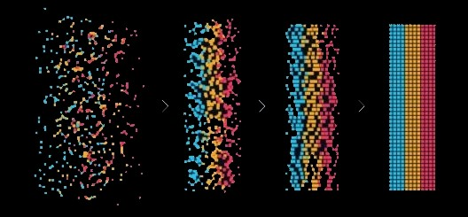
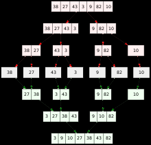

The way of practicing computational thinking comes down to a four step strategy. The first step of this strategy is Decomposition. Decomposition is what brings you into the problem solving process. This is the part where you begin to break down a problem into smaller parts, so that they become more manageable. Now that the problem has been broken down, you can better understand what's being asked of you and you can figure out how to deal with the separate parts easier. This also helps people of all ages, because now, people of younger age groups who may have trouble working with intermediate or problems of a higher difficulty can be able to see what's going on at a lower level after the problem has been broken down. Once they get an understanding they can solve the different parts of the problem and put them together. For example you can ask someone to breakdown what they need to do in order to get ready for school in the morning. You breakdown the problem into pieces and see what what all needs to be done. The problem gets simplified, gives you a mental to-do list, and gets you through the first part of computational thinking.
The next part of computational thinking is Pattern Recognition. This is the point where you analyze the problem and look for similarities in the different parts of the problem. You identify the connections that you may see in the various parts of the problem. You can see what problems have something in common and which ones are different. You can see the patterns that you find to aid you in other tasks. You can use the patterns in similar tasks, since you already know how to deal with them. This simplifies the problem even more and even helps you for future tasks. The problems or parts are similar to one another, can be handled around the same time or the same way. Pattern recognition builds you awareness and understanding of many different things that you can experience in life.
 Figure 2.1: Pattern DiagramThe next part of computational thinking is Abstraction. This is the point where you take those smallest parts of the problem and you find out the most important aspects of those parts. You figure out what the most relevant and important information is and leave out the information that isn't essential. This part furthers your understanding of the problem, because now you can see exactly what needs to be done. All of the extra information is gone, and you're focused on the main goal. Even the youth can look for clues or key details in the smaller problems. This makes the process even more valuable for people growing up, seeing as they can find a way to breakdown a problem into smaller portions, then using those smaller portions to find out what is truly being asked of you. The important information that you find could even be helpful for you in the other parts of the problem. All of the parts of computational thinking are connected together. This even helps you with other parts of life, especially when reading through a large amount of text for example. You can look through the text and see what information is actually important to you. You can decipher through it all and find the information that you really need to know. This helps you with your critical thinking as well. Through the whole strategy so far you are processing information, simplifying it, and figuring out the biggest components of it.
Finally, we get to the final stage of computational thinking, which is Algorithmic Thinking. This is where all of the simplifying pays off and you develop a solution to the entire problem. You create step-by-step instructions on how to get the problem done in a concise way. The solution is in the correct sequence and simple enough that anyone can be able to follow it, even a computer. This sums up everything that's been done. Simplifying everything and making the whole process easier, so that you get to the solution and realize that it's not as tough as you thought. There are plenty of simple ways to test this out. Making a meal, designing a route on getting somewhere, there are plenty of examples for you to try these steps out. The whole process of computational thinking is like that of an algorithm itself. It's like an algorithm that you see in computer science called divide and conquer. In this algorithm you break down problems into smaller problems until they're simple enough for you to solve them.
 Figure 2.2: Divide and Conquer Diagram